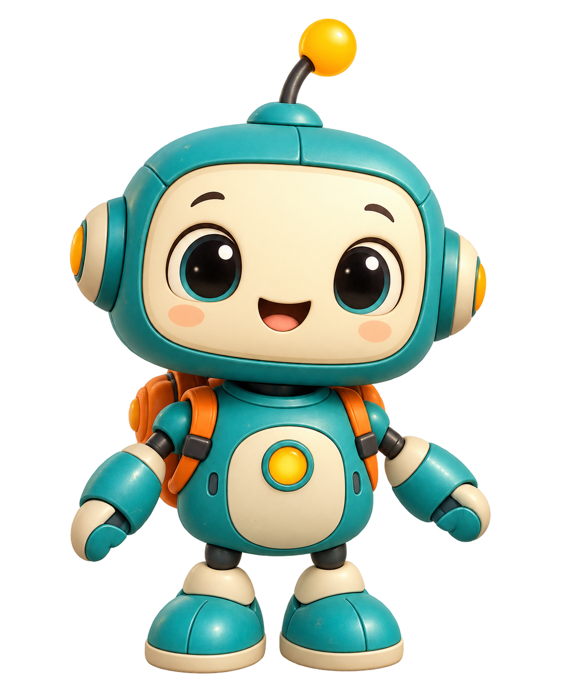

ALAN + PIP · THE SEASIDE CAFÉ
Alan's Favorites Island
Help Mina fill the festival table with favorite foods.
Play online, or save the whole café for offline play.
Set up on iPad or iPhone
- Open this page in Safari and tap Save for offline.
- Wait until this page says Offline ready.
- Tap Safari's Share → Add to Home Screen.
- Open the new island icon, turn on Airplane Mode, and try Play with Pip.
Use landscape orientation. All pictures, fonts, music and Jesse recordings are saved on this device. Keep the app icon and its website data. No login, VPN, API key or voice service is used during play.
中文设置提示
在 Safari 中打开 → 点“Save for offline” → 等待“Offline ready” → 分享 → 添加到主屏幕。打开新图标，再开飞行模式试一试。横屏游玩；游戏内点“中文”查看提示。